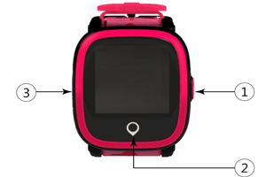

HT-770 Kids Smart Tracker Watch
Cover

①Multi function button: Power /SOS button，reject call button.
Long press the button to power on the device, after the device is powered on, if it can not be normal online(no SIM card or no signal), the device will be turned off; When the device is normally on line, press the button for 5S,it will start the SOS function; Short press to hang up.
②Answer call button(touch screen).
③SIM card cover.
Pairing the device with APP
1.Please take off the SIM card cover to insert a standard Micro-SIM card. After installing correctly, long press button① to activate the device(Note: the waterproof rubber on the screw and the SIM card slot rubber must be installed properly, otherwise it will affect the waterproof performance).
2.Start the APP: Lite Guardian.
3.Please register new account or login existing account, choose "Children watches"→choose"HT-770".
4.Scan the QR code on the rear cover or enter the watch ID number to bind the device.
5.After binding, you can set the watch function from mobile APP.
Functions and instruction
1.Time calibration: please choose your local time zone in the "Watch time and language" interface on the APP.
2.Contacts book: add contacts via the APP and save, contact book on watch would be synchronized accordingly, and the initial 3 contacts would be default SOS emergency contact person.
3.SOS :When the device is on line normally, press button ① for5S, it will start SOS function, if no one answers, it will dial circularly for two rounds to the three emergency contacts; Any of the three emergency contacts answer the SOS phone, it will stop calling circularly; It will send alert message to the three SOS emergency contacts in the same time for help.
4.Phone call: go to contacts book to choose contacts, click on call icon to make phone calls.
5.Pedometer: you can check kids' daily activity in the watch.
6.Language setting: please choose the language in the "Watch time and language" interface on mobile APP.
7.You can also set from mobile app to disable the watch in class, to set alarm, to find the watch, to power off the watch remotely, etc.
Setting the APN
1.Please set the APN firstly,or it may be unable to get positioning data.
2.How to set APN: APP Advanced Setting APN Setting Fill in APN (based on SIM card provider's APN parameter)
3.Notes: Ensure the device stays online and under a stable network connection before setting APN.
Charging instruction
Please use the special charging cable in the package to charge, the device supports any popular cell phone charger, we do not supply charger for environment friendly purpose . Please select a suitable charger on your hand for charging.
Accessories
1.Charger cable
2.User manual
3.Screwdriver
FAQ
1.Q: Why can't I power on the device?
A:The battery on your device may be running low during long-time transportation, please charge and try again.
2.Q :Why the watch can not be charged?
A:Please check whether the charger and cable is properly connected with the watch.
3.Q:Fail to scan QR code.
A:Please adjust distance between camera and QR code; or try again in a better place with enough light.
4.Q:I can not turn off the device by the power/SOS button.
A: Please power off the device from the APP when the device is normally on line. If the device is not on line(no SIM card or run out of data plan), the device will be turned off after you long press the power/SOS button.
5.Q：Why do I press the power/SOS key for a long time, the device will be turned off sometimes?
A:If the device is not on line(no SIM card or run out of data plan), or current signal is very poor, the device will be turned off after you long press the power/SOS button.
Cautions
1.Please do not immerse the device in water.
2.Pleasedo not incinerate or dispose of in fire or expose to high temperature.
Customer service
Please contact Local Retailer or our After-sales Service Center
Contact information
Welcome to contact with us if you have any queries and recommends.
Overseas
E-mail:sales@castelbds.com
Website:www.lite-guardian.com
Service Tel.:+8675586018742
Hong kong
Service Tel.:+852-26273380
Email:cs-liteguardian@castelbeidou.com
China
Service QQ:3106893070
Service Tel.:0755-8601 8738